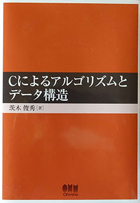

「Cによるアルゴリズムとデータ構造」（オーム社）
|
 |
|
「Cによるアルゴリズムとデータ構造」茨木俊秀著（オーム社）に用いた
Cプログラムのソースコードを
以下にリストしておきます。自由にダウンロードして、試して下さい。
バグや問題点を発見された方は、
私宛（Email: ibaraki＠ieee.org）ご連絡下さい。 注：この教科書は以前、昭晃堂より出版されていましたが、 2014年9月からオーム社に変更になりました。ただし、内容は同じです。 この間、読者の方々からの指摘によって、プログラム細部に いくつかの修正と変更を加えました。これらのご協力を厚く 感謝いたします。 |
1. アルゴリズムとその計算量
2. 基本的なデータ構造
ポインタによるスタック操作 配列によるスタック操作 階乗n!の計算 ポインタによる待ち行列の操作 前順による木のなぞり データファイルtreedata 外部ハッシュ法 内部ハッシュ法 配列で表された集合族の併合 データファイルmergedata 森表現による集合族のMERGEとFIND データファイルmtreedata
2分探索による零点の計算 ニュートン法による零点の計算 マージソート データファイルsortdata 動的計画法によるSUBSET-SUMのアルゴリズム データファイルssumdata
最小木問題に対するクラスカル法 データファイルedgedata 最短路問題に対するダイクストラ法 データファイルspathdata グラフの関節点を求める深さ優先探索のアルゴリズム データファイルgraphdata 文字列照合を行うBM法 データファイルtextdata データファイルpatterndata
データファイルsortdata シェルソート 2進数の基数ソート データファイルbidata 軸要素選択の別法によるクイックソート 最小木問題に対するプリム法 データファイルedgedata |